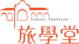

阮
阮靖婷 · 從新住民到淡水女路導覽員
女性賦能 · 二度就業 · 訪談日期 2026-03-18
來自越南，18 歲嫁來台灣，在淡水生活二十多年卻對在地文史幾乎陌生。透過區公所招募資訊進入淡水女路 3.0，從不敢公開說話，到上台分享、帶隊導覽，並參與 Open 機廠工作。
「有旅學堂才有今天的靖婷。」
她明確地說，工作不只是收入，更是成長與尊嚴的來源。她開始看見自己的生命故事與新住民視角，具有獨特的對外分享價值。

旅學堂 · 2026 影響力報告
旅學堂是一個以淡水為根的在地文化陪伴型組織。我們相信，真正的影響力，是一個人、一間店、一個場域是否因為我們而「長出」了自己的力量——從接住、共學、做事、給角色，一路擴散出去。
01我們是誰
旅學堂從淡水女路開始，把文史變成可以走、可以聊、可以記得的現場。我們培育在地導覽員（多數是二度就業女性、新住民、退休夥伴），串起學校、店家、新北捷運、大學 USR，把地方文化轉譯成深度體驗路線、桌遊、教案與影響力報告。
導覽走讀・深度遊程・女性導覽員培訓・學校 PBL 課程共創・企業 ESG 體驗・機關合作共創（Open 機廠・輕軌里山）・文化產品研發（桌遊・教案・影響力報告）
因婚育或退休離開職場的女性・新住民・拒學青年・特殊需求孩子的家庭・學校師生・地方店家・想實踐 ESG 的企業與機關・尋找真實旅行意義的旅人
02影響力是什麼
在公部門評估的語言裡，影響力經常被簡化成報表上的數字——場次、人次、滿意度。但這些數字背後的真實是：一個原本在大人面前不太敢說話的媽媽，變得能帶團導覽；一位退休教師重新找到「我仍然有用」的位置；一個特殊需求的孩子，反覆來到淡水直到這裡成為他的自然教室。
陪力 ＝ 陪伴 ＋ 讓力量長出來。
軟的那一端（情緒・關係・接住）與硬的那一端（能力・位置・影響力），
兩件事交織，才是社區陪伴的真正樣子。 —— 旅學堂研究團隊，陪力卡定義
情緒・關係・接住
不催、不推、不拉。陪伴者在情緒與關係層面做的動作，讓一個人願意靠近並留下。篩選放在陪伴裡，不放在門口。
能力・位置・影響力
給工具、給角色、給機會。陪伴者讓對方長出自己的力量，從個人能力走向公共影響，不是依賴陪伴者。
03影響力的五條軸線
旅學堂 2026 年的影響力投射在五個策略方向。每一條軸線都是一條從個人成長到社會效應的路徑。
賦能受婚育、家庭照顧、退休或自信限制的女性夥伴，從生活經驗走向公共參與、地方實作中的穩定角色，並建立非典型收入。
串聯企業、店家、職人與地方場域，共同轉譯淡水文化為深度體驗路線與文化產品，形成可持續的合作網絡。
與學校及教育夥伴共創地方教材與學習路徑，提升學生對淡水的文化理解、地方參與及在地認同。
對特殊需求學生的長期陪伴與支持模式，透過走讀與參與式學習，重建學習連結與自我表達。
組織內外部盤點、優化內控並建立 SOP，強化旅學堂的管理能力與組織韌性，支撐三年期影響力累積。
04真實故事
從 17 位受訪者裡挑出三個最能說明「長出來」的故事：一位新住民從害怕上台到能帶團、一個機關從委託變共創、一個拒學青年重新找到和世界的關係。
女性賦能 · 二度就業 · 訪談日期 2026-03-18
來自越南，18 歲嫁來台灣，在淡水生活二十多年卻對在地文史幾乎陌生。透過區公所招募資訊進入淡水女路 3.0，從不敢公開說話，到上台分享、帶隊導覽，並參與 Open 機廠工作。
她明確地說，工作不只是收入，更是成長與尊嚴的來源。她開始看見自己的生命故事與新住民視角，具有獨特的對外分享價值。
文化合作網絡 · 新北捷運公司營運中心副主任 · 訪談日期 2026-04-08
新北捷運已有品牌理念，也有在地溝通方法，但缺少一個能真正共同實作的合作夥伴。透過與旅學堂的 Open 機廠合作，把原本技術性的軌道場域轉化為地方敘事空間，讓「搭車本身成為旅行目的」從品牌想像變成實際經驗。
第一線司機員走出駕駛艙，成為地方故事與公共教育的一部分。這是公共運輸與地方文化深度整合的新範型。
教育共創 · 自學青年 · 訪談日期 2026-03-20
2019 年前後因拒學離開學校體制，旅學堂幾乎貫穿她從國小、國中到高中各階段的成長經驗。不被推著走、不被考試評價，而是在低壓狀態下持續累積理解。
走讀經驗轉化為繪本創作、印刷出版、文字書寫與小論文發表。從單一視角發展為多重視角的觀察記錄能力，成為她日後創作的核心。
05我們怎麼評估
從 17 位訪談者的實務經驗，整理出陪伴歷程中的 15 個動作。這不是一份理想清單，是一套夠誠實的工具：把「我們到底在做什麼」說得清楚、寫得下來，也能一起盤點、優化、傳承。
前兩階段是情緒與關係的底，中間兩階段是能力與位置的站穩，最後是影響力的外延。
讓人願意靠近
長出自己節奏
帶進真實現場
給有名字的位置
把改變傳出去
每一筆受訪者的成果，同時標記四欄——原始詞彙、五力（結果側）、陪力卡（動作側）、面向。統計時只看「五力」與「陪力卡」兩欄，原話保留、面向另標。
關鍵創新：把「觀察面向」從「動作欄」分離——讓不是助人者主動做的事（例如家人外溢），仍能被記錄和統計，但不會被誤當成動作。這個分離，讓整套系統變得誠實且可比較。
陪力卡不是一套完美的工具，是一套夠誠實的工具。
06成果事件鏈 Theory of Change
從「花了多少錢、做了多少場」到「讓誰的生命改變了、讓社會多了什麼」，我們用 IOOVI 框架把它攤開。投入（Input）→ 活動（Activity）→ 產出（Output）→ 成果（Outcome）→ 價值（Value）→ 影響（Impact），每一欄都是一個階段。
072026 · 三年目標
五條影響軸線各自有具體的 2026 目標，配上產出指標與成果證據。這份目標是我們對自己、對夥伴、對社會的承諾。
核心成果：遊程路線 10 條、穩定導覽出勤、非典型收入證明（薪資單・接案紀錄）。
核心成果：店家合作場次、客流量、品牌故事文件、媒體曝光、引薦案例。
核心成果：課程模組、跨校成果發表、學生作品、教師回饋問卷。
核心成果：個別陪伴紀錄、學習歷程、家長持續參與意願問卷。
核心成果：SOP 完成率、活動場次與服務人次報表、影響力報告、年度評估指標。
08邀請
我們需要不同角色的夥伴加入。不管你是企業 ESG 負責人、學校老師、願意被導覽的朋友，或是想成為導覽員的淡水媳婦——都有一個位置在等你。
員工深度體驗、團隊建立、ESG 報告素材、主題路線客製。把你們的公共承諾，落地成一次真實的地方體驗。
新北捷運 Open 機廠、輕軌里山等案例正在發生。我們可以一起把技術性場域轉譯成地方敘事，被民眾記住。
PBL 共備、真實場域學習、跨校成果發表。讓學生從課堂走到地方，在真正的情境裡學習與表達。
淡水深度路線、女路走讀、文化體驗。不只是旅遊，而是一次和地方建立關係的機會。
如果你是二度就業的媽媽、退休的夥伴、新住民，或只是想把自己對淡水的愛變成一份工作——來試試淡水女路。
我們持續尋找願意開放故事、共同設計體驗的在地夥伴。讓你的店與地方文化一起被看見、被記得、被引薦。
09個人成果回饋 · 陪力卡
把每位受訪夥伴的原始成果詞彙對應到陪力卡的 15 張動作卡。這是我們從質性訪談轉成可比較、可統計、可傳承資料的實際作法。